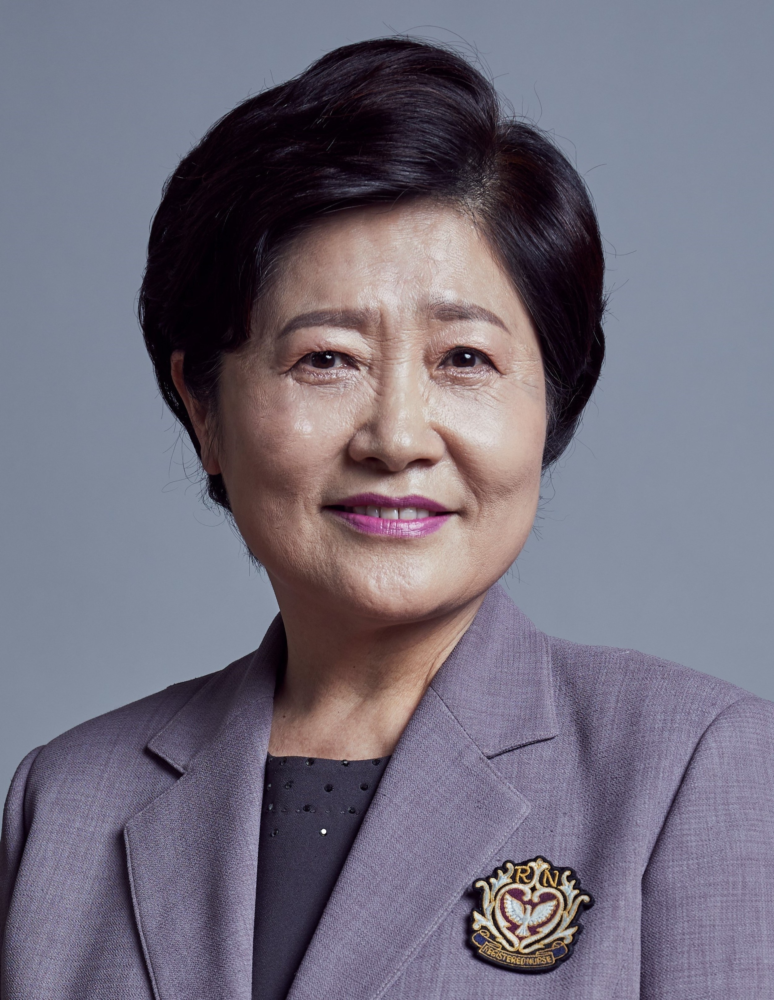

Care Robot 2026
Keynote Address

Dr. Wonkyung Song is a leading researcher in the fields of rehabilitation and care robotics at the National Rehabilitation Center (NRC). He currently serves as the Head of the Rehabilitation Assistive Technology Research Division, Director of the Rehabilitation Robot Translation Research Project Group, and Director of the User-Centric Care Robot and Service Demonstration R&D Project Group at NRC.
He received his Ph.D. in Electrical and Electronic Engineering from KAIST in 2001. Prior to joining the NRC, he worked as a Senior Researcher at Samsung SDI (2001–2008), conducting research on new process development. Since joining the NRC in 2008, he has spearheaded research and translational development in rehabilitation assistive and care robots, contributing significantly to the advancement and commercialization of robot technologies for individuals with disabilities and the elderly.
Special Field Dialogue

Director Hyesook ChoDr. Hyesook Cho holds a Ph.D. in Nursing and has served as the Director of Nursing Home Green Hill since July 2000. She has also been an Adjunct Professor in the College of Nursing at Ewha Womans University since March 2007.
She has dedicatedly driven the development of the domestic care and geriatric nursing sectors by serving in prominent leadership roles, including President of the Home Care Nurses Association under the Korean Nurses Association (2004.03–2008.03), President of the Korea Nursing Home Association (2008.03–2011.03), and President of the Gerontological Nursing Society under the Korean Nurses Association (2011.03–2013.03).